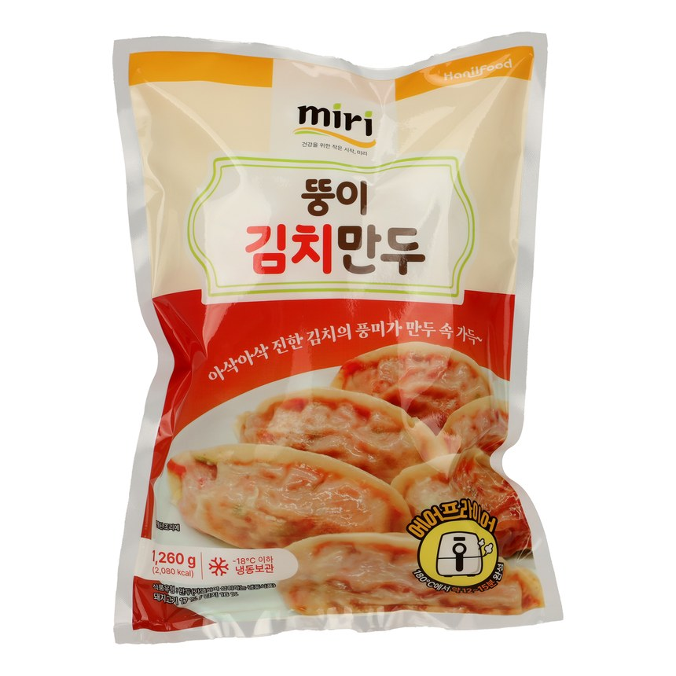

Tangy, fermented kimchi meets pork and tofu — a bold, deeply savory classic, ready to cook straight from the freezer in minutes. MIRI kimchi dumplings ship as frozen kimchi dumplings that keep their fermented bite after cooking, and pan-fry into fried kimchi dumplings with a crisp edge.
| Product Name | miri Kimchi Mandu |
|---|---|
| Net Weight | 1,260g (6 pkgs) / 630g (14 pkgs) |
| Shelf Life | 18 months |
| Storage | Keep frozen under −18°C |
| Ingredients | Pork (Korean), wheat flour (Australian), kimchi [cabbage, red pepper, garlic, fish sauce], chives, tofu, soy protein, cabbage, green onion, dried radish, onion, vermicelli, modified starch, mixed soy sauce, seasonings, ginger. |
| Nutrition (per 100 g) | 165 kcal · Protein 7 g · Carbohydrate 21 g · Sugars 2 g · Fat 6 g · Saturated 1.3 g · Trans fat 0 g · Cholesterol 10 mg · Sodium 480 mg |
| HS Code | 1902.20-0000 |
| Certifications | HACCP · ISO 9001/22000 |
| Private Label / OEM | Available |